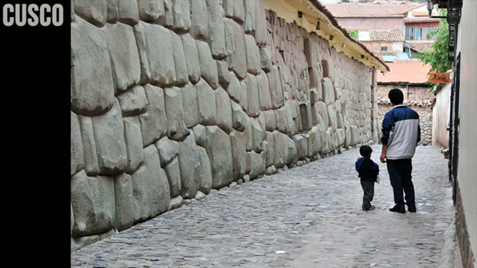
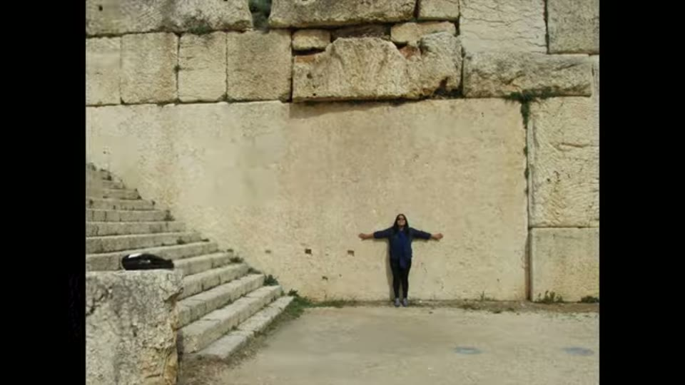

Curious Being
If It Existed, Where Are the Machines?
Tina · 19 min · watch on YouTube · summarised 2026-08-24
This is the objection the rest of the corpus has to survive, and she states it without softening 01:49–02:04:
If there was an advanced civilization with machine technology in the distant past, why haven't we found traces or remnants of its artifacts, tools or machinery?
She sets out her prior first 01:06–01:48. A previous video proposed an advanced civilisation around 20,000–30,000 years ago, possibly more sophisticated than ours, flourishing for tens of thousands of years before collapsing — argued from changes in average human cranial size, the Homo sapiens migration timeline, and studies of population replacement and bottlenecks, all coinciding with a millennia-long drought.
And the evidential base she is defending 00:35–01:06: precision cuts, sites containing millions of huge blocks, and highly accurate uniform tool marks resembling modern machine marks. On the marks, her authority is an appeal:
I have consulted with and received feedback from stonemasons and experts in construction on these markings. They confirmed that these were not the work of manual labor.

The tool marks the whole thesis rests on.
One of the three sites in that comparison is Maresha, in Israel — which she returns to four years later and describes as chalk soft enough to work with fingernails.
She concedes the obvious answers
The easy replies get raised and dismissed in thirty seconds 02:04–02:40. Sea level rose more than 100 m over a few thousand years, so some sites may be submerged; 15,000 years of erosion and sediment would have decayed and buried much. But:
Yet despite that, archaeologists found dinosaur fossils, which are far more ancient. They also uncovered many Paleolithic sites with stone tools and human skeletal remains. However, we haven't found artifacts to prove an advanced culture may have existed.
That is the dilemma stated fairly, and it is the reason this video exists.
The first move: coexistence
Rather than explaining the absence away, she proposes that the Paleolithic record is not the whole record 02:59–03:43. An advanced civilisation could have coexisted with primitive ones — as modern countries coexist with Amazonian tribes, Australian Aboriginal peoples and other groups living traditionally today. On that reading, Paleolithic settlements with stone tools represent a portion of Paleolithic society rather than the full picture.
The second move: we are looking in the wrong places
The obvious place to search is at the megalithic sites themselves, and she explains why that fails 03:43–04:35. Giza and its like have been occupied and visited for thousands of years — anything of value looted, destroyed or repurposed long ago, then cleared and cleaned again to make tourist attractions. They are heritage-listed, so excavation is restricted or prohibited. Non-invasive scanning might be approved and could help; otherwise these sites are good only for visual assessment.
So she builds a map instead 04:35–05:07. Her criterion is stated:
I'm only dotting the map with sites with obvious signs of ancient high technology. They are very unlikely or impossible to be produced by hand tools… Dolmens and other cruder stone structures are not sufficient representations of a sophisticated culture with machinery and consequently not included.

The map the argument is built on, and what its inclusion rule is.
It is worth knowing what this map is. The same pin set on the same Google Maps base appears in three videos in this corpus, unchanged: in January 2021 to argue that the Younger Dryas impact field missed these sites, here in July 2022 to argue they sit where people live, and in September 2023 to argue that North America is empty of them. Three arguments, one map, and the inclusion rule is spoken rather than published in any of them.
Then she overlays a map of current population density, and finds a correlation 05:07–06:24. The examples: the polygonal walls at Cusco and Sacsayhuamán; the blocks at Baalbek; the Western Stone in Jerusalem; the megalithic platform of the Pnyx in Athens; the octopus stone at Osaka; the Yangshan blocks beside Nanjing; Giza beside Cairo. Machu Picchu looks like the exception, but it is 66 km from Cusco — about half the distance from New York to Philadelphia. And even the sites that were probably quarries, which ought to be remote, are not: Mount Nokogiri is an hour and a half from Tokyo Station by express train.



That the megalithic sites sit where people live now.
Why that would be true anyway
To her credit she gives the ordinary explanation in full 06:36–08:14. People settle near fresh water. A 2011 study puts over 50% of the world's population within 3 km of surface fresh water and 90% within 10 km — and that is with modern utilities. In the Paleolithic, and especially in the colder, drier glacial period, fresh water meant water, fish and molluscs; the plains around it meant plants to forage and animals to hunt; flat land meant milder weather, easier travel and trade, and room to expand. Those places became important cities.

Why people have always lived in the same places.
Her conclusion from it is the interesting step:
This suggests that the cities with megalithic structures might have been built up on very ancient grounds, which could potentially trace back to the time of a previous advanced civilisation.
The brain-size argument
The premise that the whole video rests on 08:58–10:06. Working from Wikipedia's lists, she plotted Paleolithic settlements and archaic human remains from 130,000 to 12,000 years ago — a range chosen because human brain size was larger then.
Homo sapiens mean brain size peaked around 100,000 years ago at about 1500 cc, declined slightly to 1450 cc by 12,000 years ago, and fell faster after that. Today's average is the smallest in 100,000 years, and the encephalization quotient has declined too. Relative and absolute brain size, she says, positively correlate with cognitive function in humans.
The illustration under that passage is a stock "march of progress" cartoon, and the numbers she adds to it are not the numbers she speaks: ~1500 cc over a figure drawn as archaic, ~1300 cc over a man in a business suit. That is a 200 cc difference attached to two different kinds of creature; the narration's figures are 1500 falling to 1450, a difference of 50, within Homo sapiens.

The premise the whole video rests on.
Thus it is possible that modern humans in the Paleolithic era from 100,000 or earlier to 12,000 years ago were as smart as, or more so than, us — which means they had the potential brain power and time to develop into an advanced civilisation.
And the puzzle she poses from it:
How come the large-brained humans remained in the Old Stone Age for over 80,000 years and didn't make significant technological advancements? Is it possible that this long hiatus… was due to the loss of knowledge caused by the rise and fall of an earlier civilization?
What the Paleolithic map shows
The finding 10:41–12:00: most excavated Paleolithic burial grounds and settlements are in natural caves and rock shelters, in remote, hard-to-reach mountains and hills — which is, she notes, why early humans get called cavemen.
But mountains are less accessible, harsher and poorer in water and food. So why live there?
Maybe not all of them lived in caves. Think about it — these remote sites were preserved probably because they are not popular or ideal places, hence less frequently used by humans and animals.
Desirable locations were reoccupied and rebuilt countless times over tens or hundreds of thousands of years. Rome, Athens and Cairo are her examples of modern cities on old Paleolithic ground. The remote sites may therefore reflect only marginalised early groups.

Where the Paleolithic sites are.
The timeline, and the exclusion
Her reconstruction 12:28–14:11. Anatomically modern humans appear in Africa over 300,000 years ago, but signatures of cognitive modernity stay uncommon until 80,000–100,000 years ago — in line with the brain-size peak. About 50,000 years ago tool diversity and cave painting increase markedly. Around 40,000–50,000 years ago humans spread across most of the world.
It took humankind 12,000 years to go from the Old Stone Age to modern society. So if Paleolithic humans starting 40,000–50,000 years ago progressed at a similar rate, they would have had a global high-tech culture by 35,000–28,000 years ago.
She proposes that civilisation began 35,000–28,000 years ago and ended between 18,000 and 15,000 years ago during Heinrich Stadial 1 — and then does this:
I'll remove the Paleolithic sites that are 35,000 years and older.

The result: two distributions that do not meet.
Now we can see that between 35,000 and 12,000 years ago, the Paleolithic sites share no common land with the megalithic ones.
The separation on that map is real, and what it separates is legible: the surviving teal markers are in Britain, France, Iberia and western Russia, while the orange pins run through Italy, the Adriatic, Greece, Turkey, the Levant, Egypt and India. Atlantic Europe against the Mediterranean and Near East.
The conclusion drawn: Paleolithic sites speak for the people who lived in that region at that time, but may not show the sophistication of people in the more desirable zones where the megalithic sites stand — as isolated tribes today do not represent modern technology.
Where the machines went
The direct answer, at last 15:28–16:44. The megalithic civilisation in all likelihood had buildings of metal and other materials, which were not as durable as stone and would have crumbled, rusted, been scavenged or reused. We recognise the civilisation by its megalithic structures only because stone is what survived natural disaster, weathering and human damage.
Reuse is her strongest supporting evidence, and it is ordinary documented history: Egyptians took the pyramids' casing stones; Romans removed old columns, blocks and veneers for new buildings; the Chinese took rammed earth from burial mounds to make bricks; at Sacsayhuamán the smaller, movable blocks were taken by locals for their own houses, leaving only the large and heavy ones.

That ancient people took older structures apart for material.
Then the thought experiment 16:44–17:26:
If modern humanity hypothetically just disappears today, what will be found tens of thousands of years in the future? One might see the last traces of our existence in the form of super-scaled stone and masonry structures such as the Hoover Dam, Mount Rushmore and underground mines.
The Eiffel Tower, the Golden Gate Bridge and the Burj Khalifa would be gone.

That metal structures need constant maintenance to last at all.
Her closing recommendation for where to look: the shallow continental shelves, and under and around the cities near megalithic sites.
We could literally be standing on top of ruins of an earlier civilization.
What you can check yourself
- The reuse history is real and thoroughly documented. Casing stones stripped from Giza, Roman spolia, Sacsayhuamán's smaller blocks carried off into Cusco's buildings — all of it is ordinary archaeology and can be read about at length.
- The proximity claims are checkable on any map. Cusco to Machu Picchu at 66 km; Nokogiri's distance from Tokyo; Yangshan beside Nanjing; Giza beside Cairo. So is the Pnyx in Athens and the Western Stone in Jerusalem.
- The freshwater figures are from a 2011 study with specific numbers — 50% within 3 km, 90% within 10 km — and can be looked up.
- The brain-size decline is a real, published, uncontested observation. The peak near 1500 cc and the modern average being the smallest in 100,000 years are findings anyone can read; what they mean is the disputed part.
- The archaeological timeline she gives is standard: modern humans in Africa by 300,000 years ago, cognitive-modernity signatures from 80,000–100,000, the Upper Palaeolithic increase in tool diversity and art around 50,000, global dispersal 40,000–50,000.
- Heritage restriction on excavation is a genuine constraint and is a matter of public policy at every site she names.
- Both maps can be rebuilt. Population density is public data; her megalithic list is short and named in the narration. Anyone can redo the overlay with their own inclusion criteria and see how much the result depends on them.
What the video does not settle
- The map is selected on the conclusion it is offered to support. Her stated criterion for plotting a site is that it shows "obvious signs of ancient high technology" and is "very unlikely or impossible to be produced by hand tools" — and dolmens and cruder structures are explicitly excluded. The map therefore cannot be evidence that a high-technology civilisation existed; it is a picture of which sites she has already decided belong to one.
- She supplies the simpler explanation of the correlation and does not weigh it. Two full minutes explain that people always settled near water on flat land. That accounts for monuments clustering where cities now are, with no lost civilisation required, and the video moves past it without treating it as a rival hypothesis.
- The correlation may be a discovery artefact. A megalithic site near a city is more likely to be found, recorded, visited and photographed than one in an empty place. Nothing addresses whether the pattern is about where such things are or where we look.
- "No common land" is manufactured by the exclusion that immediately precedes it. She removes every Paleolithic site older than 35,000 years — using her own proposed start date as the filter — and then reports the absence of overlap as a finding. The result follows from the operation.
- The brain-size argument carries the whole video and is the weakest thing in it — but it is argued properly elsewhere, and a reader should go there before dismissing it. In the first part of the trilogy she lists the competing explanations for the decline, including self-domestication and externalised knowledge, and says plainly that nobody knows. In the second she answers viewers who challenged the proxy directly, explaining why brain volume is used for prehistoric remains and conceding its limits. None of that qualification survives into this video, which states the conclusion flat.
- The Neanderthal objection is answered, though not here. They had larger brains and larger bodies, so a lower encephalization quotient — her reply, made in the brain-size video. This video lists them among the primitive groups without giving the reason.
- "80,000 years with no significant advancement" is contradicted by her own timeline, four minutes later, where tool diversity and cave art increase markedly around 50,000 years ago. Both claims are made and neither is reconciled.
- The 12,000-year extrapolation assumes technological progress runs at a constant rate, which nothing supports — and which her own thesis denies, since it requires a civilisation to rise and then stop.
- Metals rusting away does not dispose of the evidence problem. Industry leaves slag heaps, mine workings, quarry spoil, tailings, ceramics, glass, kiln sites and geochemical signatures in sediment and ice, and those survive far longer than structures. The video accounts for the disappearance of buildings and not for the absence of everything else an industrial culture produces.
- The Hoover Dam thought experiment argues against her. If our civilisation would leave a 220 m concrete dam, a carved mountainside and vast underground mines, then a comparable ancient one should have left the equivalents. The sites she points to are very much smaller, and there are no ancient mines, spoil heaps or tailings on the map.
- The coexistence analogy breaks at the point it is needed. Modern industrial civilisation is visible from orbit, deposits plastic and radionuclides in every sediment layer worldwide, and is documented by the very peoples it is contrasted with. Contact leaves traces in both directions, and none is proposed here.
- The stonemasons are anonymous. The claim that experts confirmed the marks were not manual labour is the load-bearing appeal of the opening minute — no name, no number, no trade, no quote, no report.
- The prior is imported wholesale, from two videos, and they are now both summarised. The 20,000–30,000-year civilisation, the cranial data, the population-replacement studies and the millennia-long drought are argued in the brain-size video and the timeline video. Nothing supporting the central premise is argued here.
- Restricted excavation is asserted rather than examined. No account is given of the non-invasive survey, geophysics and published excavation that has been done at Giza, Baalbek or Cusco, much of which is available.
See also
- The Change of Human Brain Sizes… and Who Really Built the Megalithic Sites? — the first and second parts of the trilogy this video completes, made five and three weeks earlier. Everything this video assumes is argued there. Read all three in order.
- Was an Advanced Civilization Wiped Out by a 12,800-Year-old Comet at Younger Dryas? — eighteen months earlier, where she tested a mechanism for the collapse and rejected it. The timeline here has already moved off the Younger Dryas onto Heinrich Stadial 1.
- Carolina Bays Mystery — fourteen months later, using the same map again for a third purpose, and explaining the absence of North American sites by climate.
- Are the Montana Megaliths Man-Made? and The Truth About Gunung Padang — where sites come off the map, on reasoning that is stricter than anything applied here.
- A Method to Decipher Ancient Machine Marks from Hand Tools — the tool-mark claim of this video's opening minute, worked out properly three years later, and where Nokogiri is conceded to hand tools.
- Revelations of a Massive Underground Oya Quarry in Japan! — Nokogiri appears here as evidence of the lost civilisation; that entry is where the Japanese quarries begin coming apart.
- Egyptian stone vases — one of the "precision cuts" of the opening claim, retracted by the engineer who measured them.
- Israel's Land of 1,000 Caves — Maresha, one of the three panels in this video's machine-marks comparison, revisited four years later as chalk soft enough to work by hand.
- Enduring Mysteries of the Huashan Grottoes — the other site in that panel, argued at length.
- Great Pyramids' Radiocarbon Dating — the dating argument this thesis needs, made from mortar rather than from brains.
What we have not checked
- No source in this video has been located or read. The 2011 freshwater study, the brain-size and EQ figures, the population-replacement work and the Wikipedia lists she says she used are all as she gives them. Two things are visible on screen and no more: a panel of the freshwater study's own figure, uncaptioned and uncredited, and a CityLab article on repainting the Golden Gate Bridge.
- The Chinese burial mound is identified from the inscription in the frame, not from the video, which names nothing. The marker reads as the Tomb of Princess Luyuan, a satellite burial of Anling, erected by the Shaanxi Provincial People's Government in May 2011. That reading has not been confirmed against any other source.
- The three appearances of the megalithic map have not been compared pin by pin. That the base, the title and the region labels match across the three videos is what the frames show.
- The stonemasons and construction experts of the opening minute are unnamed and unquoted, and nothing has been done to identify them.
- The prior is in videos not summarised for this corpus —
u4V_ZQukWEUandq4wq6ocahoI, on the megalithic timeline and on human brain sizes. The premises of this entry therefore rest on arguments that have not been examined here. - This is an auto-generated transcript with heavy mangling. "exhibition machinery" is excavation; "chases" is traces; "eyeball back" is at Baalbek; "nyx" is the Pnyx; "mount nogul gary" is Nokogiri; "old strong age" is Old Stone Age; "venezuelans" is Denisovans; "isoxa hormone" is at Sacsayhuamán; "round earth" is rammed earth; "microlife civilization" is megalithic; "mon rushmore" is Mount Rushmore; "hs1" is Heinrich Stadial 1. Nothing should be quoted without checking the video.
- "The octopus stone at Osaka" is taken as the Takoishi at Osaka Castle, which fits, but the identification is inferred from the name, not stated.
- Whether the megalithic map here is the same one used in the Younger Dryas and Carolina Bays videos has been noted from the frames, and the three uses have not been compared pin by pin.